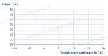
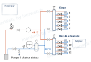

Niveau 2, autonome
Objet : loi d’eau, jours de janvier et de mai, schéma de régulation, note.
Données : régime : H1, H5 ; base, janvier : E1 ; consignes : E2 ; 18 °C et mai : exercice.
Pente au centième, températures au dixième. Tracez la droite, puis la courbe de nuit en pointillé.
| Point froid (…… ; ……) | Point doux (…… ; ……) | Pente |

| Jour | Tmin | Tmax | Moyenne | Départ | Nuit | Chauffe |
|---|---|---|---|---|---|---|
| vendredi | ||||||
| jeudi | ||||||
| dimanche | ||||||
| mai 1 | 10 | 20 | ||||
| mai 2 | 13 | 24 | ||||
| mai 3 | 15 | 27 |
Un jour d’arrêt : écrivez « – » dans la case Départ.

Dessinez les sondes, le régulateur et les liaisons (mesure en pointillé, commande en trait mixte) ; écrivez les repères. Le régulateur RG1 est dans la pompe à chaleur : dessinez-le à part, comme sur l’exemple, avec sa commande vers elle. Pièce de référence : le séjour. Vanne trois voies : en faut-il une ? ……………………………………
| Objet | |
| Données et sources | |
| Hypothèses et méthode | |
| Résultats |
Cases en trait double : à reporter à l’écran Vérifier. Détail des calculs : feuille quadrillée.